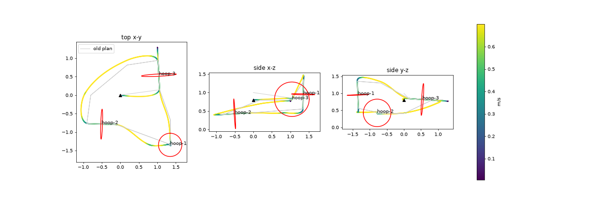

Drone 4: race day plan and what we changed
5 November 2026 · drone 4 (radio://0/30/2M/E7E7E7E704) · course start → 3 → 2 → 1 → 3 → 2 → 1 → 3 · branch drone-pipeline on the team fork
Status
| Race | Plan | State |
|---|---|---|
| Race 1 | Organisers' slow plan with stops at every hoop, 150 s, race2/plan_cons/trajectory.csv | flown clean 12:53 |
| Race 2 | Our own path: no stops, 0.7 m/s, 36.6 s, race2/plan_fast/trajectory.csv with Lighthouse trust ×4 | flown clean 14:08 |
Still open: a full charge before race 1, the team name (folder submissions/team-hoop-storm), and a dry run on the organisers' flight laptop.
Race 2 plan
The path is made by hand, not by the organisers' planner. Their planner caps the speed at 0.3 m/s and requires a stop before every hoop. Our path is one smooth curve through all seven passes. At each hoop it runs straight through the centre along the hoop's facing direction.

| Property | Value |
|---|---|
| Duration | 36.6 s (race 1 plan: 150 s) |
| Speed | 0.7 m/s on the straights, 0.5 m/s through the hoops; acceleration at most 0.9 m/s² |
| Start | A diagonal climb from (0,0,0) straight towards hoop 3, with no hover at the start |
| Lead | The drone receives the position it should be at 0.5 s ahead (position + 0.5 s × velocity). Its position control lags by about 0.5 s, so this keeps the drone on the path. |
| Hoop 1 | The pass line is moved 4 cm towards hoop 3. The approach is 0.40 m, the exit 0.25 m, then the path leaves above hoop 1 quickly. |
| Hoop 3 | A longer straight approach (0.65 m), because a tight turn put the drone 0.35 m off centre. |
| Lighthouse trust | lighthouse.sweepStd 0.0004 → 0.0001 and sweepStd2 0.001 → 0.00025, set only for this flight. A reboot restores the defaults. |
| Fingerprint | trajectory.csv sha256 starts with 50ad2715306d |
Command (on our laptop, in code/day1)
PY rehearse.py fly ../../race2/plan_fast/trajectory.csv absolute=1 lead=0.5 hold=0.5 vbat_min=3.85 lh_std=0.0001 arm=$S/GO
- Put the drone next to (0,0,0), facing +x (the preflight check allows 10°).
- Run the command. Preflight runs, the drone connects and the Lighthouse setting is applied. It then prints
ARMED. - Move the drone onto (0,0,0) and say go.
touch $S/GOmakes it take off within about 2 s. Enter in the abort window lands it.
Recreate the path: PY race2/fast_path.py. Before it writes the file it checks the clearance to each hoop frame, the number of crossings (2/2/3), the flight box and the lag model.
The key finding: the height sensor sees the hoop frames
At every hoop 3 crossing the height estimate dropped 0.3–0.5 m within 0.2 s. The drone answered with full thrust (65535) and was thrown sideways. The 14:08 flight logged the raw height-sensor distance (range.zrange), which shows the cause:
- Hoop 3: its bottom edge sits at z ≈ 0.35 m. Directly over it, the downward-pointing sensor reads 0.35–0.50 m instead of about 0.88 m.
- Hoop 1: this hoop is horizontal at z 0.95. Leaving it over its edge, the sensor reads 0.28–0.31 m while the drone is at 1.3–1.5 m.
- Hoop 2: its bottom edge is on the floor, so there was no problem there all day.
The firmware has no setting to switch the height sensor off. Instead we make the estimate trust Lighthouse 4× more. With that, the drop at hoop 3 shrank from 0.88 → 0.40 m (14:02, fence, landing) to 0.89 → 0.62 m (14:08, recovered). The drone still gets short kicks, but it stays on course.
Flights today
| Time | What | Result |
|---|---|---|
| 12:53 | Race 1 plan, baseline settings | clean small kicks at hoop 3 and the hoop 1 edge |
| 13:18 | Race 1 plan, Kalman pNAcc_xy ×0.5 | worse fence at the hoop 1 edge; setting dropped |
| 13:42 | Our path at 0.5 m/s | fence at about 41 s, above hoop 1 |
| 13:50 | Our path at 0.7 m/s | crash after hoop 3 on lap 2 |
| 14:02 | 0.7 m/s, diagonal start, hoop 1 line moved | fence at the first hoop 3 pass, landed softly |
| 14:08 | 0.7 m/s + Lighthouse trust ×4 | clean all 7 passes, no fence |
All logs are in code/day1/data/flip_4_HHMM_rehearsal.csv.
What we changed and where
| File | Change |
|---|---|
race2/fast_path.py | New. Builds the race 2 path from chosen points: a smooth curve, straight lines through the hoops, speeds limited by acceleration and curvature. It checks hoop clearance, the crossings and the box, and simulates the drone's lag. |
race2/plan_fast/trajectory.csv, path.png | New. The race 2 plan and its plot. |
race2/plan_fast_05/trajectory.csv | New. The same path at 0.5 m/s, kept as a fallback. |
race2/RACE_DAY.md | New. The race-day sheet with both commands. |
code/day1/rehearse.py |
lead=: command position + lead × velocity.arm=: preflight and connect first, then wait for the go file and take off within about 2 s. The abort window opens only after the go.hold=: length of the hover before the start.lh_std=: Lighthouse trust for this flight only.tuning=: apply a submission tuning.json the way the organisers' runner does.Speed limit raised to 0.8 m/s. |
code/day1/flip.py | The flight log now records the raw height-sensor distance (range.zrange) instead of vertical speed. |
submissions/team-hoop-storm/v01/optimized/tuning.json | Optimized profile: position_p_xy ×0.95 (xKp/yKp 2.0 → 1.9). The baseline profile is unchanged. Both are within the organisers' limits (controller 0.9–1.1). |
Commits on drone-pipeline: 57a8085, eb8f0b9, dd18488, 167196f.
Race 1 plan
The organisers' slow plan with stops, the same as the clean 12:53 flight. Use a full battery (at least 4.10 V on the charger) and reboot first, so the Lighthouse setting from race 2 tests is gone. Run it with the organisers' runner on their laptop with submissions/team-hoop-storm/v01/, or on our own laptop:
PY rehearse.py fly ../../race2/plan_cons/trajectory.csv absolute=1 vbat_min=4.0
Checklist before each race
- battery Unplug USB; at least 4.0 V at rest (race 1: full charge)
- reboot
crazyflie.py reboot --label 4after any crash or landing that left it locked - heading Front along +x (preflight refused it at +176° once)
- props Check the propellers after any crash
- flip The backflip has never been flown. It is not part of race 2.